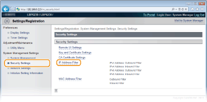
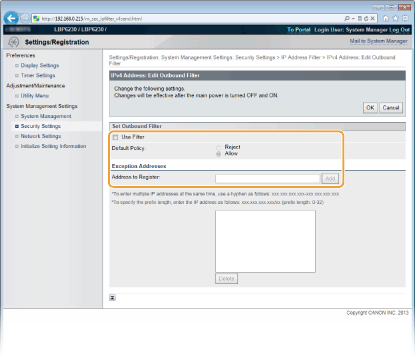
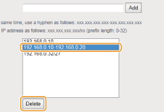

0KU8-02W
Você pode permitir a comunicação apenas com os dispositivos que possuem endereços IP especificados e recusar a comunicação com outros dispositivos. Você também pode especificar as configurações para recusar a comunicação apenas com dispositivos com endereços IP específicos e permitir as outras comunicações. Você pode especificar um único endereço IP ou um intervalo de endereços IP.
|
|
|
Até 16 endereços IP (ou intervalos de endereços IP) podem ser especificados para ambos, IPv4 e IPv6.
Os protocolos de comunicação que podem ser restritos desta maneira são TCP, UDP e ICMP.
|
1
Inicie o Remote UI e faça o logon no modo Administrador Sistema. Iniciando o Remote UI
2
Clique em [Settings/Registration].

3
Clique em [Security Settings]  [IP Address Filter].
[IP Address Filter].

4
Clique [Edit] para especificar um tipo de filtro.

[IPv4 Address: Outbound Filter]
Restrinja os dados enviados de uma impressora a um computador especificando um endereço IPv4.
Restrinja os dados enviados de uma impressora a um computador especificando um endereço IPv4.
[IPv4 Address: Inbound Filter]
Restrinja os dados recebidos de uma impressora a um computador especificando um endereço IPv4.
Restrinja os dados recebidos de uma impressora a um computador especificando um endereço IPv4.
[IPv6 Address: Outbound Filter]
Restrinja os dados enviados de uma impressora a um computador especificando um endereço IPv6.
Restrinja os dados enviados de uma impressora a um computador especificando um endereço IPv6.
[IPv6 Address: Inbound Filter]
Restrinja os dados recebidos de uma impressora a um computador especificando um endereço IPv6.
Restrinja os dados recebidos de uma impressora a um computador especificando um endereço IPv6.
5
Especifique as definições da filtragem.
De acordo com as condições da política, selecione uma política padrão para permitir ou recusar a comunicação entre a impressora e outros dispositivos. Depois, especifique os endereços IP para as exceções.

|
1
|
Marque a caixa de seleção [Use Filter] e selecione uma política com [Default Policy].
[Use Filter]
Marque a caixa de seleção para restringir a comunicação. Desmarque a caixa de seleção para comunicar sem restrições. [Default Policy]
De acordo com as condições da política, selecione se permitirá ou recusará que outros dispositivos se comuniquem com a impressora.
|
||||
|
2
|
Especifique os endereços de exceção.
Digite o endereço IP (ou um intervalo de endereços IP) na caixa de texto [Address to Register] e clique [Add].
 Formato de entrada dos endereços IP
Para inserir um único endereço (IPv4)
Digite os números separados por "." (pontos) (Exemplo: "192.168.0.10"). Para inserir um único endereço (IPv6)
Digite os números separados por ":" (dois pontos) (Exemplo: "fe80::10"). Para especificar um intervalo de endereços
Insira um hífen ("-") entre os endereços (Exemplos: "192.168.0.10-192.168.0.20" "fe80::10-fe80::20"). Para especificar um intervalo de endereços com um prefixo
Digite um endereço seguido por uma barra ("/") e um número indicando o comprimento do prefixo (Exemplos: "192.168.0.32/27" "fe80::1234/64"). Quando [Reject] está selecionado para um filtro de saída
Pacotes multicast e de transmissão de saída não podem ser filtrados.
Para excluir um endereço IP que foi definido
Selecione o endereço IP para excluir e clique [Delete].
 |
||||
|
3
|
Clique em [OK].
|
6
Reinicie a impressora.
Desligue a impressora, espere pelo menos 10 segundos e ligue novamente.